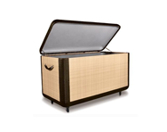

Crafter Biography: Alibata



My Story:
Representing the strong end of the community, Alibata's masculinity is exhibited in his furniture. A strong sense of pride and integrity motivates him to bring income to the remote Waray ethnic group in Southern Leyte. He specializes in building strong minimalist pieces that reflect a silent humility which will surely be felt and appreciated.
Mangyan Tribe:
The Waray inhabit the islands of Samar and Biliran, and the eastern section of Leyte in the Eastern Visayas Region. The Waray language belongs to the Visayan language family and is related to Cebuano, Hiligaynon, and Masbateño. The Waray-speaking people of Leyte (Leyteños) and Samar (Samareños) are a strong and proud group. They produce some of the finest native Philippine wines, commonly called pangasi and tuba. Hats and mats made from buri or tikug plant strips, which are still heavily used in the rural areas today, are the most distinctive handicrafts of the Warays.